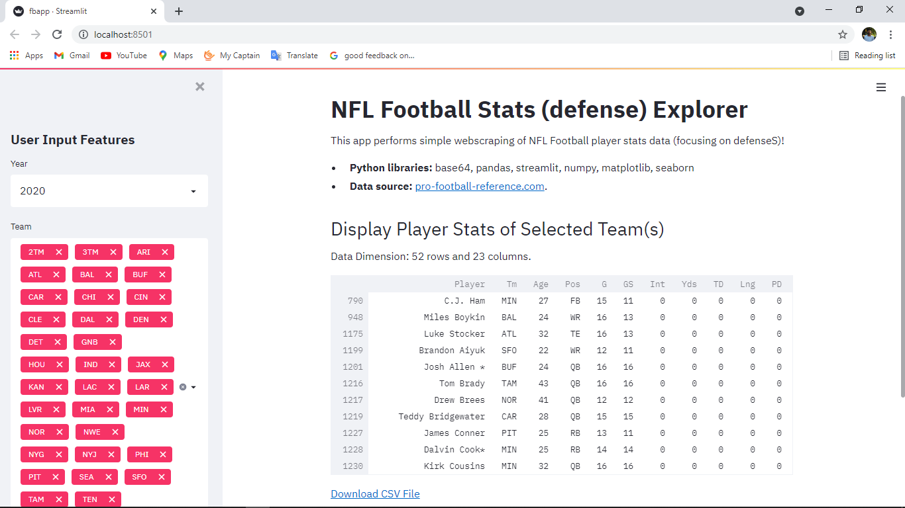

NFL Football Stats (defense) Explorer
This app performs simple webscraping of NFL Football player stats data (focusing on defenseS)!
Python libraries: base64, pandas, streamlit, numpy, matplotlib, seaborn
Data source: [pro-football-reference.com](https://www.pro-football-reference.com/)
.
Technologies:
- - Python
- - streamlit
- - pandas
- - numpy
- - seaborn
- -matplotlib